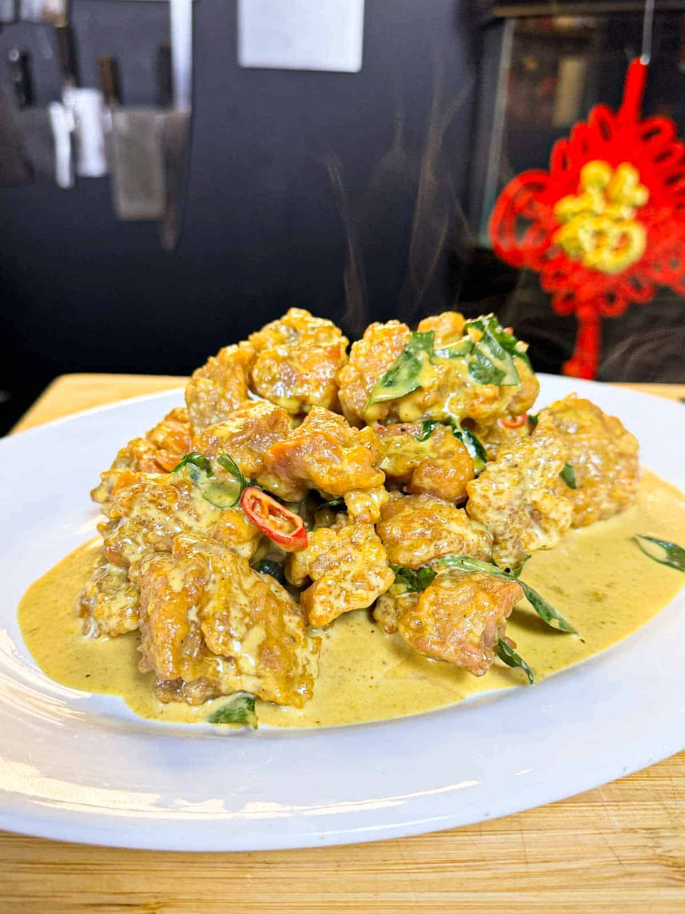

Malaysian Butter Chicken Recipe

Description
Malaysian butter chicken (奶油雞丁) aka buttermilk chicken is a dish that combines tender pieces of chicken with a rich and creamy sauce.
The chicken is typically marinated in a mixture of spices, often including garlic, ginger, and chili, before being cooked to perfection.
The creamy sauce is made with butter, evaporated milk, and sometimes additional ingredients like curry leaves, onions, and bell peppers.
The result is a dish with a luxurious texture and a balance of savory and slightly sweet flavors. Malaysian buttermilk chicken is often
served with rice or noodles and is a popular choice in Malaysian cuisine for its comforting and satisfying taste.
Ingredients
Chicken
- Chicken thigh
- Egg
- Sesame oil
- Ginger
- YumYum or MSG
- White pepper
- Chicken powder
- Cornstarch to coat
- Vegetable or canola oil
Sauce
- Unsalted butter
- Garlic, chopped
- Thai Bird's Eye Chillis
- Curry leaves
- Evaporated milk
- Sugar
- Curry powder
Steps
Chicken
- Cut the chicken thigh into 2-3 cm sized pieces.
- Combine the remaining ingredients in a large bowl and add the cut chicken.
- Mix until well combined and set aside to marinade for 10 minutes.
- Heat a large wok or pot and heat the oil until it reaches 180C/350F.
- Add the chicken and fry for 10 minutes, or until cooked through and golden brown.
- Strain the chicken from the oil and set aside.
- Set the leftover oil aside to be used next time you deep-fry.
Creamy Butter Sauce
- Combine the chili, garlic, curry leaves, and butter in your wok over low heat.
- Add curry powder, evaporated milk, yum yum, sugar.
- Stir to combine and cook until it's foaming.
- When it's foaming add the chicken back and toss to combine.
- Serve immediately.